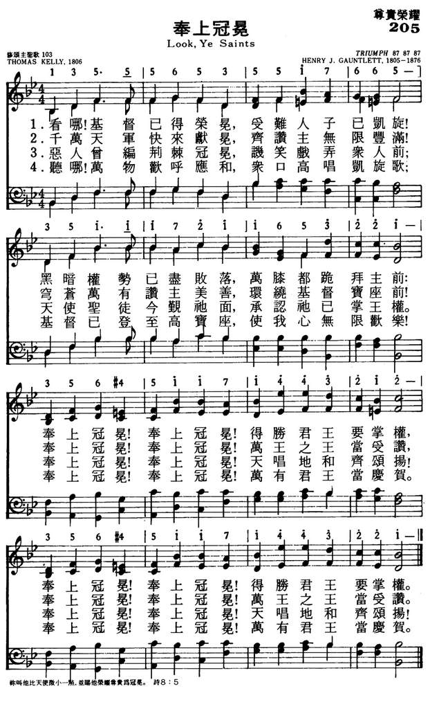

1845
Look, Ye Saints _凱立
Thomas Kelly
205奉上冠冕
|
|
|
|
1 Look, ye saints, the sight is glorious:
see the man of sorrows now!
From the fight returned victorious,
ev'ry knee to him shall bow.
Crown him! Crown him!
Crowns become the victor's brow.
Crown him! Crown him!
Crowns become the victor's brow.
2 Crown the Savior, angels, crown him!
Rich the trophies Jesus brings;
on the seat of pow'r enthrone him
while the vault of heaven rings.
Crown him! Crown him!
Crown the Savior King of kings.
Crown him! Crown him!
Crown the Savior King of kings.
3 Sinners in derision crowned him,
mocking thus the Savior's claim;
saints and angels crowd around him,
own his title, praise his name.
Crown him! Crown him!
Spread abroad the victor's fame.
Crown him! Crown him!
Spread abroad the victor's fame.
4 Hark, those bursts of acclamation!
Hark, those loud, triumphant chords!
Jesus takes the highest station;
oh, what joy the sight affords!
Crown him! Crown him!
King of kings and Lord of lords!
Crown him! Crown him!
King of kings and Lord of lords!
Source: Christian
Worship: Hymnal #
|
205奉上冠冕
1.看哪！基督已得荣耀，受难人子已凯旋！
黑暗全是已尽败落，万膝都跪拜主前：
奉上冠冕！奉上冠冕！得胜君王要掌权，
奉上冠冕！奉上冠冕！得胜君王要掌权。
2.千万天军快来献冕，齐赞主无限丰满！
穹苍万有赞主美善，环绕基督宝座前！
奉上冠冕！奉上冠冕！万王之王当受赞；
奉上冠冕！奉上冠冕！万王之王当受赞。
3.恶人会编荆棘冠冕，讥笑戏弄众人前；
天使圣徒今观他面，承认他已掌王权；
奉上冠冕！奉上冠冕！天唱地和齐颂扬！
奉上冠冕！奉上冠冕！天唱地和齐颂扬！
4.听哪！万物欢呼齐应和，众口高唱凯旋歌；
基督已登至高宝座，使我心无限欢乐！
奉上冠冕！奉上冠冕！万有君王当庆贺。
奉上冠冕！奉上冠冕！万有君王当庆贺。
|
|
https://www.mred365.cn/szxg/7208.html

https://hymnary.org/hymn/SBHC1958/page/428
 |
|
|
|
 Look
Ye Saints - Christian Hymns (choir with lyrics)
Look
Ye Saints - Christian Hymns (choir with lyrics)
-
LX1845
Look, Ye Saints
205奉上冠冕
|
Short Name: |
Thomas Kelly |
|
Full Name: |
Kelly, Thomas, 1769-1855 |
|
Birth Year: |
1769 |
|
Death Year: |
1855 |
Kelly, Thomas,

B.A., son of Thomas
Kelly, a Judge of the Irish Court of Common Pleas, was born in Dublin, July
13, 1769, and educated at Trinity College, Dublin. He was designed for the
Bar, and entered the Temple, London, with that intention; but having
undergone a very marked spiritual change he took Holy Orders in 1792. His
earnest evangelical preaching in Dublin led Archbishop Fowler to inhibit him
and his companion preacher, Rowland Hill, from preaching in the city. For
some time he preached in two unconsecrated buildings in Dublin, Plunket
Street, and the Bethesda, and then, having seceded from the Established
Church, he erected places of worship at Athy, Portarlington, Wexford, &c, in
which he conducted divine worship and preached. He died May 14, 1854.
Miller, in his Singers & Songs of the Church, 1869, p.
338 (from which some of the foregoing details are taken), says:—
"Mr. Kelly was a man
of great and varied learning, skilled in the Oriental tongues, and an
excellent Bible critic. He was possessed also of musical talent, and
composed and published a work that was received witli favour, consisting
of music adapted to every form of metre in his hymn-book. Naturally of
an amiable disposition and thorough in his Christian piety, Mr. Kelly
became the friend of good men, and the advocate of every worthy,
benevolent, and religious cause. He was admired alike for his zeal and
his humility; and his liberality found ample scope in Ireland,
especially during the year of famine."
Kelly's hymns, 765 in all,
were composed and published over a period of 51 years, as follows:—
(1) A
Collection of Psalms and Hymns extracted from Various Authors, by Thomas
Kelly, A.B., Dublin, 1802. This work contains 247 hymns by various
authors, and an Appendix of 33 original hymns by Kelly.
(2) Hymns on Various Passages of Scripture,
Dublin, 1804. Of this work several editions were published: 1st, 1804;
2nd, 1806; 3rd, 1809; 4th, 1812. This last edition was published in two
divisions, one as Hymns on Various Passages of
Scripture, and the second as Hymns adapted for
Social Worship. In 1815 Kelly issued Hymns by
Thomas Kelly, not before Published. The 5th edition, 1820, included
the two divisions of 1812, and the new hymns of 1815, as one work. To
the later editions of 1820, 1826, 1836, 1840, 1846, and 1853, new hymns
were added, until the last published by M. Moses, of Dublin, 1853,
contained the total of 765.
As a hymn-writer Kelly was
most successful. As a rule his strength appears in hymns of Praise and in
metres not generally adopted by the older hymn writers. His "Come, see the
place where Jesus lay" (from "He's gone, see where His body lay"),"From
Egypt lately come"; “Look, ye saints, the sight is glorious"; "On the
mountain's top appearing"; "The Head that once was crowned with thorns";
"Through the day Thy love has spared us"; and “We sing the praise of Him Who
died," rank with the first hymns in the English language. Several of his
hymns of great merit still remain unknown through so many modern editors
being apparently adverse to original investigation. In addition to the hymns
named and others, which are annotated under their respective first lines,
the following are also in common use:—
i. From the Psalms and Hymns, 1802:—
Tune Information
|
Title: |
TRIUMPH (Gauntlett) |
|
Composer: |
Henry J. Gauntlett |
|
Meter: |
8.7.8.7.8.7 |
|
Incipit: |
13555 65355 17665 |
|
Key: |
C
Major |
|
Copyright: |
Public Domain |
|
Short Name: |
Henry J. Gauntlett |
|
Full Name: |
Gauntlett, Henry J. (Henry John), 1805-1876 |
|
Birth Year: |
1805 |
|
Death Year: |
1876 |
Henry J. Gauntlett

(b.
Wellington, Shropshire, July 9, 1805; d. London, England, February 21, 1876)
When he was nine years old, Henry John Gauntlett (b. Wellington, Shropshire,
England, 1805; d. Kensington, London, England, 1876) became organist at his
father's church in Olney, Buckinghamshire. At his father's insistence he
studied law, practicing it until 1844, after which he chose to devote the
rest of his life to music. He was an organist in various churches in the
London area and became an important figure in the history of British pipe
organs. A designer of organs for William Hill's company, Gauntlett extended
the organ pedal range and in 1851 took out a patent on electric action for
organs. Felix Mendelssohn chose him to play the organ part at the first
performance of Elijah in Birmingham, England, in 1846. Gauntlett is said to
have composed some ten thousand hymn tunes, most of which have been
forgotten. Also a supporter of the use of plainchant in the church,
Gauntlett published the Gregorian Hymnal of Matins and
Evensong (1844).
Bert Polman
简介（一）
（来源：《岁首到年终》）
主啊，谁敢不敬畏祢，不将荣耀于祢的名呢。因为独有祢是圣的，
万民都要来在祢面前敬拜，因祢公义的作为已经显出来了。(启15:4)
约翰在异象中看见天上的敬拜情景，四活物与廿四位长老都将荣耀、尊贵，权柄归给神，正因祂是配得的。神在所创造的万物中显出祂的尊贵，正如诗19:1
所说「诸天述说神的荣耀，穹苍传扬祂的手段。」
我们的主曾经戴过荆棘冠冕，现在得了尊贵为冠冕。曾经披戴罪的羞辱，现在得到荣耀。彼拉多曾将一冠冕戴在祂的头上，现在祂要你要为祂献上冠冕，甚么是「为主献上冠冕」？不是一时的赞美称颂，乃是一生一世以祂为王。如果祂是王，祂同时也就是主。换言之，将你的生命和一切都交托祂来管理。祂是万王之王。在永�琩談◢�到永无止息的欢乐称颂。祂有天上地下一切的权柄。不要以祂为耻，作祂为元首，奉上冠冕。
在英语世界中，这首「奉上冠冕」是公认为最好的升天节圣诗。乃根据启11:15「世上的国成了我主和主基督的国，祂要作王，直到永永远远。」而写的。
作者 Thomas Kelly 1769 年 7 月 13
日生于爱尔兰的都柏林。进入三一大学原为攻读法律，因在学校获得强烈的重生经历，遂改习神学，预备全职服事。23岁受按立为安立甘教会牧师，后脱离教会，自立门户，成为爱尔兰独立会之中坚分子。他擅讲道，又有唱歌恩赐，且能著作，所以他的工作极有果效。在他一生中共写了
765 首圣诗，有部份乃自己谱曲。其中一百四十多首现仍流行。Kelly 牧师勤于工作，乐于布道，直到 1854 年因中风瘫痪，才与世长辞。
1 看哪﹗基督已得荣耀，受难人子已凯旋﹗
黑暗权势已尽败落，万膝都跪拜主前：
奉上冠冕﹗奉上冠冕﹗得胜君王要掌权，
2 恶人曾编荆棘冠冕，讥笑戏弄众人前，
天使圣徒今觐祂面，承认祂已掌王权。
奉上冠冕﹗奉上冠冕﹗万王之王当受赞。
3 看哪﹗万物欢呼应和，众口高唱凯旋歌；
基督已登至高宝座，使我心无限欢乐﹗
奉上冠冕﹗奉上冠冕﹗万有君王当庆贺。
＊基督徒乃是一个以主耶稣基督十架夸口、为荣的人── 密勒
凯利（Thomas Kelly，1769，7，13-1855，5，14）作词（1809年），斯马特（Henry
Smart，1813，10，26-1879，9，6）作曲（1867年）
圣徒请看荣耀景象，受难人子已凯旋； 战争停止，胜利归来，万膝跪拜在主前 天使天军奉上冠冕，因主战果极辉煌； 拥主为王坐宝座上，欢呼颂赞震穹苍。
恶人曾编荆棘冠冕，讥讽凌辱加主身； 天使圣徒今在主前，敬奉耶稣至尊名。 听啊\\, 万有欢呼应和，众口高唱凯旋歌； 基督已登至高宝座，此情此景何欢乐。
奉上冠冕！奉上冠冕！得胜大君掌王权。
这首诗歌是凯利根据“世上的国成了我主和主基督的国，他要作王，直到永永远远”（启11：15）而创作的，为我们呈现了一幅基督战胜死亡，加冕为万王之王的光荣画面。
词作者托玛斯.凯利出生于爱尔兰的一个法官家庭，在都柏林的三一学院接受教育，再到伦敦学习法律，中途退学。因立志献身，于1792年接受爱尔兰圣公会按立，开始传道。他竭力推崇因信称义的真理，受到罗马教的禁止，于是脱离原教会创立新的教派，发展信徒。他博学多才，讲道富有吸引力，深受贫民阶层的欢迎。
他一生共创作了765首圣诗，还擅长于作曲，曾对爱尔兰的圣诗事业做出重大的贡献。他的作品始终以伟大的福音真理作为主题，体现了他内心的喜乐，赞美，信心和盼望。
本诗的曲调名《摄政王广场》，是斯马特为纪念伦敦该处的长老会教堂而写的。斯马特曾在那里为长老会编辑了一本通用的赞美诗集。
曲作者斯马特出生于英国伦敦的一个钢琴小提琴制造商的家庭。叔父是温莎圣乔治教堂最负盛名的指挥家和司琴。斯马特在家庭音乐气氛的熏陶之下，主要靠自学而成为教会著名的司琴。他曾编辑出版了两本赞美诗集，被誉为圣诗和声的经典之作。他还对风琴的演奏有很深的研究。他在人生的最后15年，双目完全失明，但凭着惊人的记忆力继续担任琴师和作曲工作。
《赞美诗》（505版）第347首《我心须听》也是斯马特作曲的。
http://pt.fuyinchina.com/m/view.php?aid=3769
"And He hath on His vesture and on His thigh a name written, KING OF KINGS…" (Rev.
19.16)
INTRO.:
A hymn which indicates that we should submit to the reign of Jesus Christ who is
King of kings is "Look, Ye Saints, the Sight Is Glorious." The text was written
by Thomas Kelly (1769-1854). It was first published in his 1806 Hymns
on Various Passages of Scripture (most sources give the date
as 1809, which was the third edition). The song has been set to several
melodies. The tune (Crown Him) used in most of our older books was composed by
George Coles Stebbins (1846-1945). The copyright renewal date is 1919, so the
original copyright date was 1891. Among hymnbooks published by members of
the Lord’s church during the twentieth century for use in churches of Christ,
the song appeared in the 1921 Great
Songs of the Church (No. 1) and the 1937 Great
Songs of the Church No. 2 both edited by E. L. Jorgenson; and
the 1963 Abiding
Hymns edited by Robert C. Welch. The text was used with a tune
(Cwm Rhonnda) by John Hughes in the 1963 Christian
Hymns edited by J. Nelson Slater. Today the text may be found
with a tune (Coronae) by William Monk in the 1986 Great
Songs Revised edited by Forrest M. McCann, although from
McCann’s notes in Hymns
and History, which was designed to serve as a handbook for Great
Songs Revised, it appears that the the editors had planned to use another
tune (Bryn Calfaria) by William Owen.
The song gives praise to Jesus Christ as the King who sits on His throne at
God’s right hand.
I. Stanza 1 encourage every knee to bow to Him
"Look, ye saints, the sight is glorious, See the Man of sorrows now;
From the fight returned victorious, Every knee to Him shall bow.
Crown Him, crown Him, Angels crown Him, Crowns become the Victor’s brow."
A. Jesus was once the "Man of Sorrows": Isa. 53.3
B. However, He was victorious so that every knee should bow to Him: Phil.
2.8-11
C. Because of His victory, He has been crowned with many crowns: Rev. 19.11-12
II. Stanza 2 encourages every voice to sing to Him as the King
"Crown the Savior! angels, crown Him; Rich the trophies Jesus brings.
In the seat of power enthrone Him, While the vault of heaven rings.
Crown Him, crown Him, Angels crown Him, Crown the Savior King of kings."
A. Jesus is pictured as bring rich trophies when He came before the Ancient of
Days to receive His kingdom: Dan. 7.13-14
B. Thus, He was enthroned in the seat of power after He was raised from the
dead: Eph. 1.19-23
C. It was then that He could be called King of kings because the kingdoms of
this world became His: Rev. 11.15
III. Stanza 3 encourages both saints and angels to praise His name
"Sinners in derision crowned Him, Mocking thus the Savior’s claim;
Saints and angels crowd around Him, Own His title, praise His name.
Crown Him, crown Him, Angels crown Him, Spread abroad the Victor’s fame."
A. At His crucifixion, sinners crowned Jesus in mockery: Mk. 15.16-20
B. However, now angels crowd around Him to praise Him: Rev. 7.9-15
C. The reason is that He was Victor over death by His resurrection: Rom. 1.3-4
IV. Stanza 4 encourages everyone to acknowledge Him as Lord of lords
"Hark, those (the) bursts of acclamation! Hark, those loud triumphant chords!
Jesus takes the highest station; O what joy the sight affords!
Crown Him, crown Him, Angels crown Him, King of kings and Lord of lords!"
A. The book of Revelation pictures many bursts of acclamation to Jesus: Rev.
5.8-12
B. This is because He has taken the highest station, having been raised by God
to sit at His right hand: Acts 2.29-36
C. Therefore He, who was made a little lower than the angels, for the suffering
of death, has been crowned with glory and honor:" Heb. 2.9
CONCL.:
The usual version given by Stebbins omits the last line of each stanza and uses
the last line of stanza 2 repeated once as a refrain, but the last line of each
stanza repeated once could easily fill in the music. Donald Hustad, probably
letting his premillennialism show through, referred to this song as "Thomas
Kelly’s majestic coronation paean for the second advent of Christ." However,
there is nothing in the song which would suggest that Kelly was thinking of the
second coming but rather of the ascension of Jesus. This song can be sung as a
picture of that time after Jesus rose from the dead when He sat down on His
throne at the right hand of God, which would have been so wonderful that if we
had been present, we would have said, "Look, Ye Saints, the Sight Is Glorious."
https://hymnstudiesblog.wordpress.com/2009/03/23/quotlook-ye-saints-the-sight-is-gloriousquot/
Words: Thomas Kelly (b. July 13, 1769; d. May 14, 1855)
Music: Bryn Calfaria (Hill of Calvary), by
William Owen (b. Dec. 12, 1813; d. July 20, 1893)
Links:
Wordwise Hymns
The Cyber
Hymnal
Note: Written over two hundred years ago (in 1809), this is a truly
great hymn, and a number of tunes have been used with it. The last line
and a half of text (“Crown Him! Crown Him! / Crowns become the Victor’s
brow”) need to be repeated with some of the tunes.
Bryn Calfaria, in a minor key, has great dramatic power. But the
Cyber Hymnal lists a number of alternatives. Coronae, by
Henry Monk (1823-1889) is often used. You might also try Cwm
Rhondda, the tune by John Hughes (1873-1932), which we use for Guide
Me, O Thou Great Jehovah, or Regent Square, by Henry Thomas
Smart (1813-1879), which is commonly used with Angels, from
the Realms of Glory.
The inspiration for this wonderful ascension hymn (which
also foreshadows something of the second coming) comes from Revelation
11:15, which declares:
“The kingdoms of this world have become the kingdoms of our Lord
and of His Christ, and He shall reign forever and ever!”
It is a dramatic reversal of the rejection of Christ at His first
coming, when His brow was cruelly pierced with a crown of thorns. At
that time, “Sinners in derision crowned Him, / Mocking thus the
Saviour’s claim” (CH-3). But all that changed with His return to Glory.
“He humbled Himself and became obedient to the point of death,
even the death of the cross. Therefore God also has highly exalted
Him and given Him the name which is above every name, that at the
name of Jesus every knee should bow, of those in heaven, and of
those on earth, and of those under the earth, and that every tongue
should confess that Jesus Christ is Lord, to the glory of God the
Father” (Phil. 2:8-11).
CH-1) Look, ye saints! the sight is glorious:
See the Man of Sorrows now;
From the fight returned victorious,
Every knee to Him shall bow;
Crown Him! Crown Him!
Crowns become the Victor’s brow.
The Philippian passage tells us that ultimately, as Thomas Kelly
declares, “every knee shall bow to Christ (vs. 10). It’s
all inclusive. Just as Christ’s name is above “every” name (vs. 9, same
word). Some indeed will bow in reverence and holy submission (cf. Rev.
4:10-11; 19:4-9). And the heavenly city will echo with “bursts of
acclamation” (CH-4), honouring the Lord.
But unregenerate sinners, and Satan and his demon hosts, will bow
too, in the sense that they will be forced to acknowledge the absolute
sovereignty of Christ, and will be unable to deny the perfect justice of
God (cf. Deut. 32:4), though filled with hate and malice still.
Surrounded by the searing pains of hell, fallen angels and lost sinners
will face an eternity of lonely and regretful remembrance, grinding
frustration, hateful rage, and utter hopelessness (cf. Matt. 25:41; II
Thess. 1:9; Rev. 14:11; 20:10-15; 22:11).
This dreadful prospect gives all the more reason for the urgent
proclamation of the gospel of grace today. Compelled by the love of
Christ (II Cor. 5:14), we plead with others to turn to the Saviour,
because “now is the day of salvation” (II Cor. 6:1-2). Before death
closes the door forever, and the unsaved face the prospect of eternal
condemnation (Heb. 9:27), we need to “spread abroad the Victor’s fame”
(CH-3), and tell what the Saviour has done to save fallen mankind.
CH-4) Hark, those bursts of acclamation!
Hark, those loud triumphant chords!
Jesus takes the highest station;
O what joy the sight affords!
Crown Him! Crown Him!
King of kings and Lord of lords!
Questions:
1) Does your church calendar include a recognition of Ascension Day?
(And is this a hymn you have used for that?)
2) Does your church teach about the existence of hell, and warn all
who are outside of Christ that it is their certain destination (cf. Jn.
3:36)?
Links:
Wordwise Hymns
維基百科，自由的百科全書
托馬斯·凱立（Thomas Kelly，1769年7月13日－1855年5月14日）是一位愛爾蘭福音派教徒，讚美詩作者。在1803年以前曾為愛爾蘭教會牧師，後脫離。
1769年7月13日，凱立出生在愛爾蘭皇后郡（萊伊什郡）的凱利維爾。他的父親老托馬斯·凱立（1723–1809）是愛爾蘭上訴法院的法官。他於1785年進入都柏林三一學院，1789
年畢業。1786年進入倫敦的中殿律師學院[1]。
在都柏林，凱立受到三一學院學生約翰沃克（John
Walker，1769–1833)的影響，威廉·羅曼尼（William Romaine）在《福音教義》(Evangelical
Doctrines)一書中的觀點也給他留下了深刻的印象。他認罪悔改，經歷重生得救。[2] 1792年23歲，他選擇放棄法律事業，由愛爾蘭的國立教會按立為傳道人。沃克也在
1793 年按立。.[1][3] 在此期間，另外兩個朋友亨利·馬圖林
(Henry Maturin) 和沃爾特·雪莉 (Walter Shirley) 也接受按立。[2] 1793年，羅蘭希爾（Rowland
Hill）訪問都柏林，倆人觀點一致，開始傳講恩典，「從律法中得自由」。1794
年初，他每個主日下午在聖路加堂（St. Luke's
Church）熱切傳講福音信息。這些激怒了愛爾蘭教會都柏林總主教羅伯特·浮樂（Robert Fowler），禁止他們傳講這些教義。[1]。
凱立在都柏林建立好幾處小型獨立聚會：一個是普朗克特街聚會所（Plunket
Street Meeting House），另一個是伯賽大禮拜堂（Bethesda Chapel, 有一段時間他是受託人）[4] 後來又去了阿西（Athy）。1795
年，他結婚後搬到黑石（Blackrock），在那裡建造了一座小教堂[1]。
凱立與他的朋友在愛爾蘭廣泛傳播他的福音派觀點。1802 年，他創立了教派 稱為凱立會（Kellyites），有六個會眾，從蘇格蘭 招募了一些牧師，同年，羅伯哈爾登（Robert
Haldane）和詹姆斯哈爾登（James Haldane）兄弟在那裡開設了神學院, 從格拉斯哥搬到愛丁堡 and
expanded.[1][5] 1803
年他與愛爾蘭教會決裂。[1] 同年，沃克自己建立了一個團體，名為上帝教會（Church
of God），1804 年 被開除都柏林三一學院的成員資格。[3] 並進行了擴展。他於
作為。
凱立在阿西和都柏林服務教會達五十多年。1855年5月14日，凱立在都柏林去世，享年86歲。但在他死後，他的會眾消失了。[1]
聖詩作者[編輯]
凱立一生寫了765首聖詩，出版時間超過
51 年。 「詩篇和讚美詩集」（A Collection of Psalms and Hymns，1802 年）包含
247首，其中 33 篇是凱立的。 《聖經不同段落的讚美詩》（Hymns on Various Passages of
Scripture，1804 年）發行了四個版本，之後是「從未出版過的托馬斯·凱利的讚美詩」（Hymns of
Thomas Kelly, never before published，1815 年），隨後又出版了四個版本。[4]到1853年所出的第七版詩集。
- "Stricken, Smitten, and
Afflicted"[6]
- 「讚美救主，順服至死」(We Sing the Praise
of Him Who Died，1815)[7]
- 「那從以東來的，是誰」(Who is this that
Comes from Edom？1809)[8]
- 「從前那戴荊棘的頭」（The Head that Once
Was Crowned With Thorns）[9]
- 「聽啊，千萬金琴爭鳴」（Hark! Ten Thousand
Harps and Voices，1806）[10]
- 「看哪何等榮耀情景」（Look, Ye Saints,
the Sight is Glorious）[11]
- 「錫安雄踞，群山圍繞」（Zion Stands by
Hills Surrounded，1806）[12]
- 白晝旅人因「愛」趕路（Through the Day Thy
Love Hath Spared Us）[13]
- 主，接納我們的詩歌（Lord，accept our
feeble song！）
- 頌讚聲音何等難得！（How pleasant is the
sound of praise！）
- 看哪。冠冕已給羊羔！（Behold the Lamb
with glory crowned）
- 恩典——最甜天籟(Grace is the Sweetest
Sound)
1795年，凱立娶了伊莉莎白·蒂赫（Elizabeth Tighe），她是威克洛郡議員、約翰·衛斯理的支持者威廉·蒂赫（William
Tighe）的大女兒，他的妻子莎拉·福恩斯（Sarah Fownes）是第二代男爵威廉·福恩斯爵士（Sir William Fownes,
2nd Baronet）的女兒。她為婚姻帶來了財富。他們有兩個女兒，伊莉莎白嫁給了鮑爾斯考特子爵（Viscount
Powerscourt）的小兒子愛德華·溫菲爾德牧師（Reverend Edward Wingfield），而弗朗西斯（Frances）嫁給了托馬斯·韋伯牧師（Reverend
Thomas Webber），是查爾斯·埃德蒙·韋伯將軍（Charles Edmund Webber）的母親。[1][14]。
https://zh.wikipedia.org/wiki/%E5%87%AF%E7%AB%8B